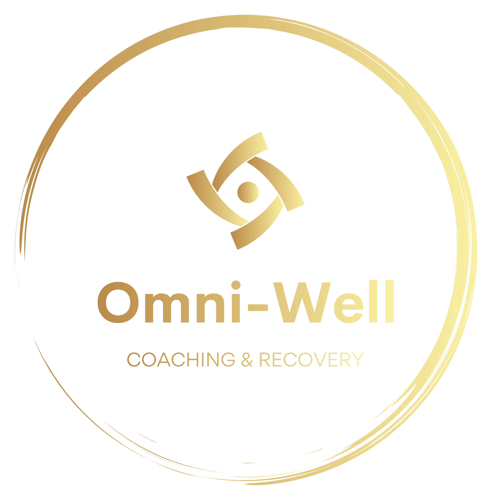
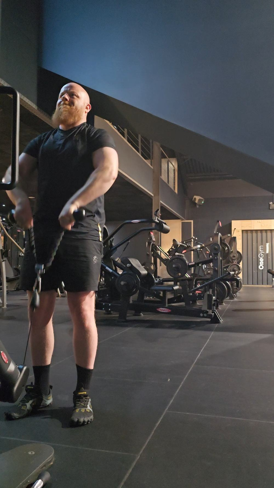
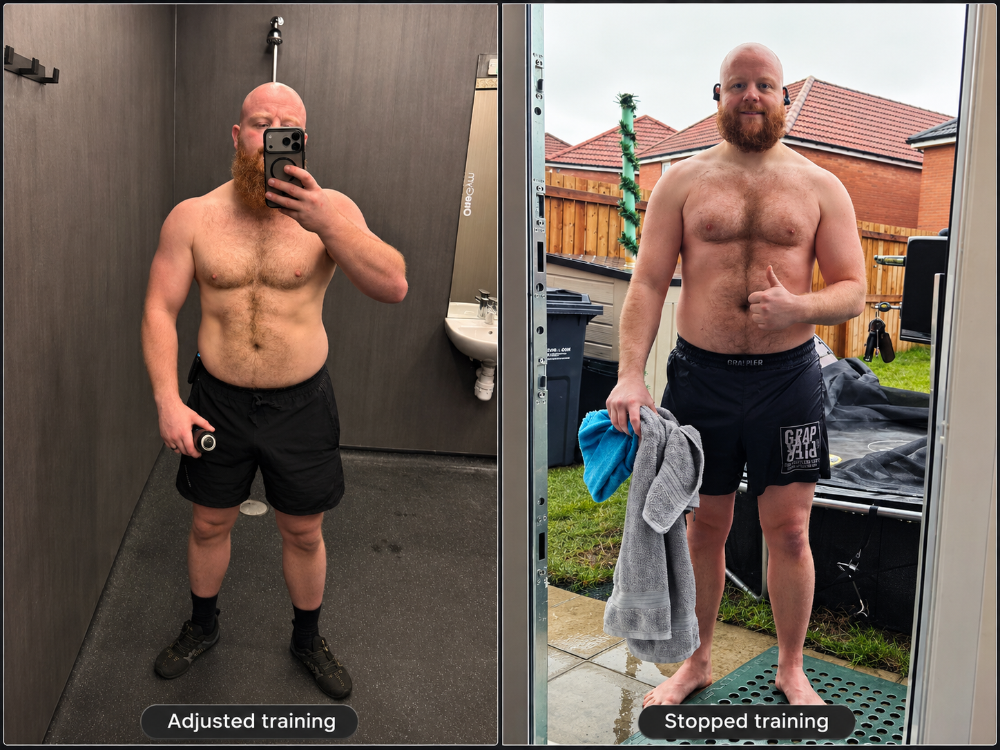
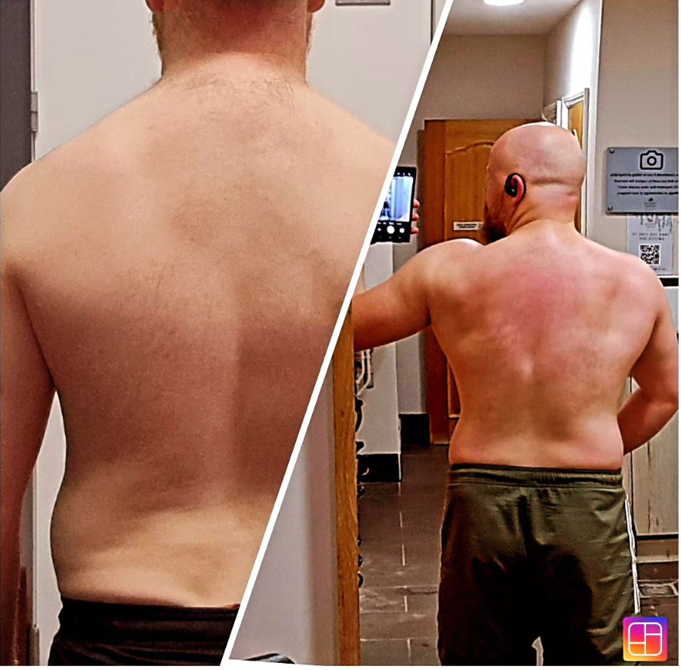

Omni-Well · Everyday Fitness
Build your
fitness.
Coaching built around your schedule and your body. Based at OneGym Wynyard, or train online from anywhere.
Enquire on WhatsAppSee pricing
Pricing
Pick your level
Start with online coaching and add in-person sessions when it suits you. Standalone session £50. Taster session £25 for new clients.
Online Coaching
£50 / month
Full programme in the app with video guides, tracking and direct access to me.
Hybrid · 1 session / month
£45 per session + £50 online = £95/month
Monthly in-person check-in at OneGym Wynyard.
Hybrid · 2 sessions / month
£40 per session + £45 online = £125/month
Fortnightly form checks and spotting.
Hybrid · 4 sessions / month
£35 per session + £40 online = £180/month
Weekly in-person coaching, booked in advance.
8-Week Programme
£129 one-off
A structured plan with no ongoing commitment.
In-person sessions at OneGym Wynyard · Open in Google Maps. Complete 10 sessions and earn a free Omni-Well T-shirt.
What clients say
"Great overall experience. Very friendly and accommodating. The teaching and mentoring style is second to none."Jon H · Google review
"He taught me how to work around injuries and stay motivated during a challenging period in my life."K · Google review
Two injuries. Two different approaches.

In both of these photos, I'd gained a bit of weight following an injury.
The difference?
Right: I stopped training.
Left: I adjusted how I trained around my injury.
No drastic diet. No extreme training programme. Just a basic restructure of my week, focusing on what I could do rather than what I couldn't.
I'm actually probably heavier in the photo on the left, but the difference in body composition speaks for itself.
My shoulder still isn't fully recovered. I'm still working, coaching, training and managing the injury, but this time I've adapted rather than stopped altogether.
Injuries, work commitments and life in general will always throw obstacles in your way. Your training programme needs to be flexible enough to accommodate them.
Progress isn't always about losing weight, lifting heavier or training harder. Sometimes it's simply about training smarter.
Change the plan, not the goal.
ADAPT. DON'T ABANDON.
Omni-Well
Before and after
